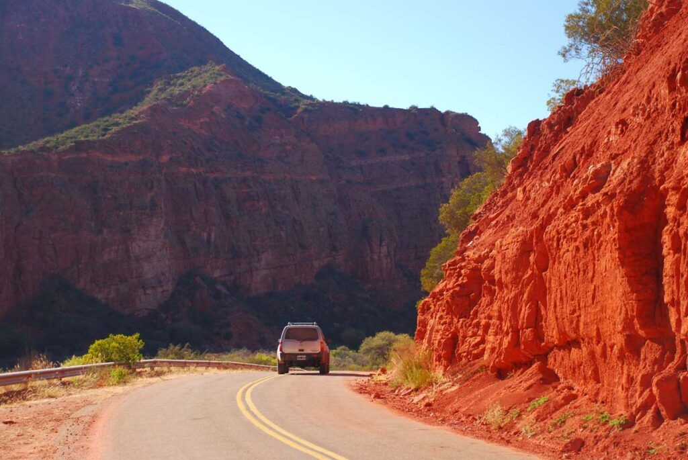
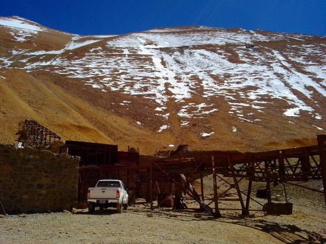
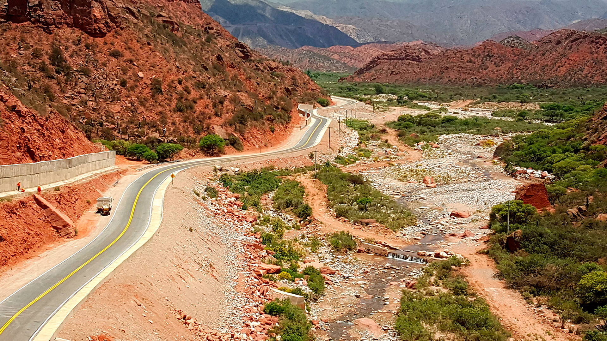
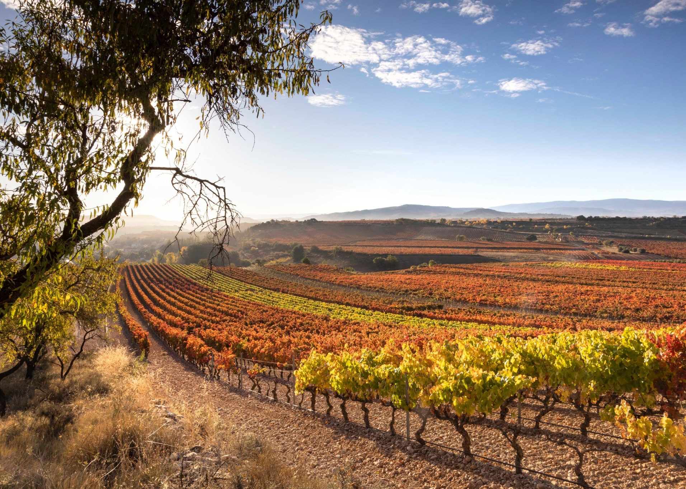
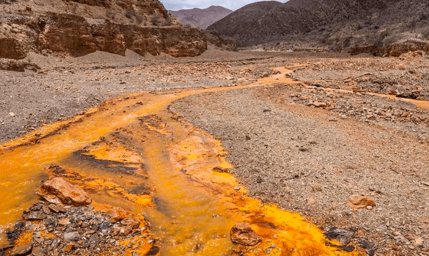

La mayoría de las excursiones salen desde el centro de Chilecito y duran entre 6 y 10 horas. Se realizan con guías locales certificados, vehículos 4x4 cuando es necesario, y siempre incluyen agua, refrigerio y explicaciones históricas y ecológicas. Recomendamos reservar con anticipación (especialmente en temporada alta: octubre a abril) y llevar ropa cómoda, protector solar, gorra, lentes de sol y calzado con buen agarre.

La Cuesta de Miranda – uno de los paisajes más espectaculares
Estas salidas combinan aventura, historia minera, naturaleza y gastronomía local. Todas respetan el turismo sostenible: sin dejar rastro y apoyando a familias y productores de la zona.

La excursión clásica de Chilecito. Visita guiada a la Estación 1 y parte de la 2, con entrada al museo histórico. Se recorre la estructura del cablecarril (monumento histórico nacional), se explica su funcionamiento (1904-1927) y la vida minera de la época. Incluye anécdotas de obreros y fotos antiguas. Dificultad baja, ideal para familias. Duración: 3-4 horas. Mejor en la mañana por la luz.

Ruta escénica icónica de 32 km por la RN40. 100 curvas con vistas a cañones rojizos, ríos de montaña y cardonales gigantes. Paradas en miradores panorámicos (2.020 m s.n.m.), pozas naturales y el famoso "Puente colgante". Posibilidad de picnic y fotos. Se puede hacer en auto particular o tour guiado (recomendado si no tenés 4x4). Duración: 5-7 horas ida/vuelta.

Visita a Bodega La Riojana (la más grande de la provincia) o bodegas boutique familiares. Incluye recorrido por viñedos a 1.000-1.500 m de altura, explicación del Torrontés riojano y Malbec de altura, y degustación comentada de 4-6 vinos con tabla de quesos y aceitunas locales. Algunas incluyen almuerzo maridado. Duración: 4-6 horas. Perfecta para amantes del enoturismo.

Combinado muy popular: trekking moderado por el Río del Oro (aguas cristalinas, pozas para baño) y exploración del Cañón del Ocre con formaciones rojizas y amarillas impresionantes. Incluye petroglifos indígenas y vistas 360°. Dificultad media, duración 6-8 horas. Ideal con guía y picnic. Temporada óptima: primavera y otoño.
Todas estas excursiones se pueden personalizar (privadas, en pareja, familiares, fotográficas) y combinan perfectamente con estadías en Chilecito. ¡Contactanos para armar tu itinerario ideal!